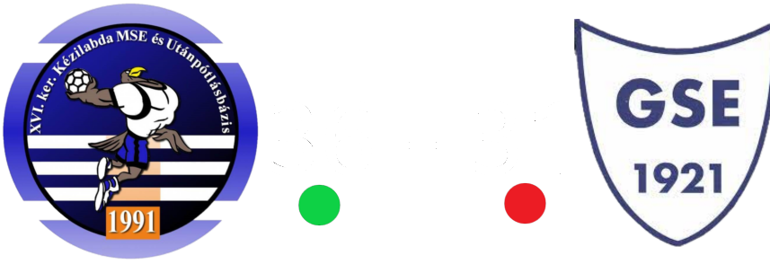

A RENDSZER FOLYAMATOSAN FRISSÜL
BREAKING NEWS:
KMSE - HÓDMEZŐVÁSÁRHELY
10:30-TÓL

KEZDŐOLDAL
A NAP JÁTÉKOSA
JÁTÉKOSOK
EGYED HILDA
19
IVÁNKA LIZA EMMA
30
KATONA TÍMEA
07
KESKENY FLÓRA
72
KÓCZIÁN GRÉTA
10
KÓCZIÁN LILLA
15
LAJTOS PANNA LAURA
05
LENDVAI ZSÓFIA
42
NÉHETH ADÉL FLÓRA
38
NÉMETH PETRA
27
SZANISZLÓ NIKOLETTA
01
THALY KATA ZSUZSANNA
78
UJVÁRI DÓRA HANNA
18
VARBAI NOÉMI
04
WITTMANN NÓRA
33
KOVÁCS NÓRA
vezetőedző